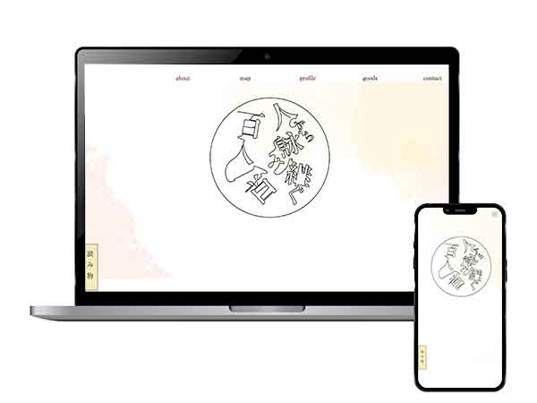

このサイトはWEBサイトの詳細ページです
人から詠み継ぐ百人一首
このサイトについて

詠み手たちに注目した百人一首紹介コンテンツ
- コンセプト：共感ベストアルバム。
- 制作期間：14日間
- ターゲット：都内に勤める20代女性が中心。百人一首を覚えたい、または興味のある人を対象に、幅広い年代に利用してほしい
- 配色：和のイメージを基準にして、白に近い淡い色、くすんだ灰色を文字のベースにしています。
工夫した点
レスポンシブデザイン（スマホ・タブレット）にも対応
レスポンシブデザインを取り入れた初めてのWEBサイト作品です。
わかり易いサイトマップを考えた点
このサイトでは100人1首の相関図とそれぞれのプロフィールを身分ごとにわけ、歌人一人ひとりを紹介しています。俯瞰と詳細を使い分けるために、どう分かりやすくページを飛ばすのかを考えました。
苦労した点
制作期間の中でコンテンツを完成させることができるか
もともと、百人一首のプロフィールと相関図で人物を2つの方向から見比べて楽しんでもらうメディアを作成しており、今回のサイトではそれをデジタル化したものになります。そのため、相関図や各歌人のプロフィールを短期間でコーディングをしなければならないところに難しさを感じました。
解決策
Ai(イラストレーター)を駆使する
相関図はアナログの時のデータを再利用し、イラストレーターのデータを再利用しました。1からコーディングをするよりもその方が効率的だったからです。イラストレーターのレイヤーをしつこい程細かく分けていました。整理したデータをHTMLに反映させたことで、後から修正しなければいけないものが出た時にもストレスなく修正ができました。
テンプレートを決め打ち！
より充実した完璧なサイトにしよう！と意気込むと時間切れになってしまう。細部にまでこだわりたくなる性格を抑えて、全体ざっくり→細部はあと、と自分に言い聞かせ、テンプレートは5割ほどの完成度で次に進めていました。そのため、後から共通タグやheader、javascriptなどが二度手間となりましたが、これは次回の作品を作る際の課題として大きな収穫でした。
＜補足＞
このコンテンツはもともと一つのアナログの商品としてまとめた読み物が元になっています。もっと詳しく知りたい方は以下をご覧ください
卒業制作「人から読み解く百人一首」